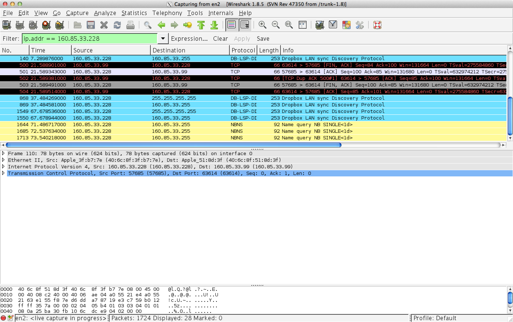

Wie merkt ein Client, wenn die aufgerufene Methode während der Auftragsbearbeitung abstürzt oder aber in eine ewige Schleife gerät?
EndlessClient merkt es gar nicht. Wenn der Server beendet, merkt es der Client.
Beim beenden des Servers tritt folgende Exception auf:
java.rmi.UnmarshalException: Error unmarshaling return header; nested exception is:
java.io.EOFException
at sun.rmi.transport.StreamRemoteCall.executeCall(StreamRemoteCall.java:228)
at sun.rmi.server.UnicastRef.invoke(UnicastRef.java:161)
at java.rmi.server.RemoteObjectInvocationHandler.invokeRemoteMethod(RemoteObjectInvocationHandler.java:194)
at java.rmi.server.RemoteObjectInvocationHandler.invoke(RemoteObjectInvocationHandler.java:148)
at com.sun.proxy.$Proxy0.interpret(Unknown Source)
at ch.zhaw.client.GuiBox.interpret(GuiBox.java:116)
at ch.zhaw.client.GuiBox.interpret(GuiBox.java:124)
at ch.zhaw.client.GuiBox.actionPerformed(GuiBox.java:134)
at java.awt.TextField.processActionEvent(TextField.java:617)
at java.awt.TextField.processEvent(TextField.java:585)
at java.awt.Component.dispatchEventImpl(Component.java:4861)
at java.awt.Component.dispatchEvent(Component.java:4687)
at java.awt.EventQueue.dispatchEventImpl(EventQueue.java:735)
at java.awt.EventQueue.access$200(EventQueue.java:103)
at java.awt.EventQueue$3.run(EventQueue.java:694)
at java.awt.EventQueue$3.run(EventQueue.java:692)
at java.security.AccessController.doPrivileged(Native Method)
at java.security.ProtectionDomain$1.doIntersectionPrivilege(ProtectionDomain.java:76)
at java.security.ProtectionDomain$1.doIntersectionPrivilege(ProtectionDomain.java:87)
at java.awt.EventQueue$4.run(EventQueue.java:708)
at java.awt.EventQueue$4.run(EventQueue.java:706)
at java.security.AccessController.doPrivileged(Native Method)
at java.security.ProtectionDomain$1.doIntersectionPrivilege(ProtectionDomain.java:76)
at java.awt.EventQueue.dispatchEvent(EventQueue.java:705)
at java.awt.EventDispatchThread.pumpOneEventForFilters(EventDispatchThread.java:242)
at java.awt.EventDispatchThread.pumpEventsForFilter(EventDispatchThread.java:161)
at java.awt.EventDispatchThread.pumpEventsForHierarchy(EventDispatchThread.java:150)
at java.awt.EventDispatchThread.pumpEvents(EventDispatchThread.java:146)
at java.awt.EventDispatchThread.pumpEvents(EventDispatchThread.java:138)
at java.awt.EventDispatchThread.run(EventDispatchThread.java:91)
Caused by: java.io.EOFException
at java.io.DataInputStream.readByte(DataInputStream.java:267)
at sun.rmi.transport.StreamRemoteCall.executeCall(StreamRemoteCall.java:214)
... 29 more
ExceptionTritt eine Exception auf, wird diese weitergeleitet
Exception in thread "AWT-EventQueue-0" java.lang.ArithmeticException: / by zero
at ch.zhaw.server.EchoRmiServer.interpret(EchoRmiServer.java:28)
at sun.reflect.NativeMethodAccessorImpl.invoke0(Native Method)
at sun.reflect.NativeMethodAccessorImpl.invoke(NativeMethodAccessorImpl.java:57)
at sun.reflect.DelegatingMethodAccessorImpl.invoke(DelegatingMethodAccessorImpl.java:43)
at java.lang.reflect.Method.invoke(Method.java:601)
at sun.rmi.server.UnicastServerRef.dispatch(UnicastServerRef.java:322)
at sun.rmi.transport.Transport$1.run(Transport.java:177)
at sun.rmi.transport.Transport$1.run(Transport.java:174)
at java.security.AccessController.doPrivileged(Native Method)
at sun.rmi.transport.Transport.serviceCall(Transport.java:173)
at sun.rmi.transport.tcp.TCPTransport.handleMessages(TCPTransport.java:553)
at sun.rmi.transport.tcp.TCPTransport$ConnectionHandler.run0(TCPTransport.java:808)
at sun.rmi.transport.tcp.TCPTransport$ConnectionHandler.run(TCPTransport.java:667)
at java.util.concurrent.ThreadPoolExecutor.runWorker(ThreadPoolExecutor.java:1145)
at java.util.concurrent.ThreadPoolExecutor$Worker.run(ThreadPoolExecutor.java:615)
at java.lang.Thread.run(Thread.java:722)
at sun.rmi.transport.StreamRemoteCall.exceptionReceivedFromServer(StreamRemoteCall.java:275)
at sun.rmi.transport.StreamRemoteCall.executeCall(StreamRemoteCall.java:252)
at sun.rmi.server.UnicastRef.invoke(UnicastRef.java:161)
at java.rmi.server.RemoteObjectInvocationHandler.invokeRemoteMethod(RemoteObjectInvocationHandler.java:194)
at java.rmi.server.RemoteObjectInvocationHandler.invoke(RemoteObjectInvocationHandler.java:148)
at com.sun.proxy.$Proxy0.interpret(Unknown Source)
at ch.zhaw.client.GuiBox.interpret(GuiBox.java:116)
at ch.zhaw.client.GuiBox.actionPerformed(GuiBox.java:134)
at java.awt.Button.processActionEvent(Button.java:409)
at java.awt.Button.processEvent(Button.java:377)
at java.awt.Component.dispatchEventImpl(Component.java:4861)
at java.awt.Component.dispatchEvent(Component.java:4687)
at java.awt.EventQueue.dispatchEventImpl(EventQueue.java:735)
at java.awt.EventQueue.access$200(EventQueue.java:103)
at java.awt.EventQueue$3.run(EventQueue.java:694)
at java.awt.EventQueue$3.run(EventQueue.java:692)
at java.security.AccessController.doPrivileged(Native Method)
at java.security.ProtectionDomain$1.doIntersectionPrivilege(ProtectionDomain.java:76)
at java.security.ProtectionDomain$1.doIntersectionPrivilege(ProtectionDomain.java:87)
at java.awt.EventQueue$4.run(EventQueue.java:708)
at java.awt.EventQueue$4.run(EventQueue.java:706)
at java.security.AccessController.doPrivileged(Native Method)
at java.security.ProtectionDomain$1.doIntersectionPrivilege(ProtectionDomain.java:76)
at java.awt.EventQueue.dispatchEvent(EventQueue.java:705)
at java.awt.EventDispatchThread.pumpOneEventForFilters(EventDispatchThread.java:242)
at java.awt.EventDispatchThread.pumpEventsForFilter(EventDispatchThread.java:161)
at java.awt.EventDispatchThread.pumpEventsForHierarchy(EventDispatchThread.java:150)
at java.awt.EventDispatchThread.pumpEvents(EventDispatchThread.java:146)
at java.awt.EventDispatchThread.pumpEvents(EventDispatchThread.java:138)
at java.awt.EventDispatchThread.run(EventDispatchThread.java:91)
Ist die Methode, sollte der Server (Server-Objekt bzw. Plattform) trotzdem unversehrt weiterlaufen, erneut ansprechbar?
Der Server kann weiterhin von anderen Clients ganz normal angesprochen werden.
Dei vom Server geworfene Exception wird auf dem Client gefangen, es kann weiter gearbeitet werden.
Inwiefern geraten sich verschiedene Clients, welche "gleichzeitig" einen RMI-Aufruf plazieren, einander in die Quere?
ThreadingPro Connection gibt es einen eigenen Thread. Bei Zugriffen auf gleiche Ressourcen sollte deshalb Synchronized verwendet werden.
Was ist die Rolle der rmiregistry? In welcher Weise sind Server und Client darauf angewiesen?
Die rmiregistry implementiert den Portmapper von RPC. Der Server trägt sich bei der registry auf dem Localhost ein mit seinem namen. Dies geschieht beim Bind aufruf.
Der Client greift beim lookup call auf den Server mit dem RMI Standardport auf die registry zu und fragt nach dem Port des Servers mit dem entsprechenden Namen. Danach kommunizieren sie über einen Highlevelport, hier z.B. 63614

Was kostet ein RMI-Zyklus? Welche Faktoren bestimmen in welchem Mass die verschiedenen Zeitintervalle, die ein kompletter RMI-Call beansprucht? Gibt es Timeout-Werte, und wie machen sich allfällige Timeout-Ereignisse bemerkbar? Dokumentieren Sie Ihre Versuchsanordnung, die damit gewonnen Messwerte, und stellen Sie die Resultate verständlich und plausibel dar.
Unser Testcode macht einen RMI Aufruf und misst die Zeit, instanziert den RMI Server als Objekt und ruft interpret ohne RMI auf, also direkt auf dem Objekt auf. Den gleichen Versuch machen wir noch auf 2 Computern welche bei per Lan mit dem ZHAW Lan verbunden sind.
| Aufruf | RMI | RMI über Netzwerk | Lokales Objekt |
|---|---|---|---|
| Aufruf 1 | 13ms | 18ms | 11ms |
| Aufruf 2 | 1ms | 3ms | 0ms |
Was geschieht wenn während der Ausführung die Netwerkverbindung unterbricht? Was wenn sie zwischen der Ausführung Unterbricht und wieder aufgebaut werden kann?
Wait60Wenn während der Ausführung des Befehls, hier beispielsweise eine While Schlaufe die 60 Sekunden dauert, die Netzwerkverbindung des Servers unterbrochen wird und rechtzeitig wiederhergestellt ist, erhält der Client die Response als ob nichts passiert wäre.
Wait60Der Versuch liefert das selbe Resultat wie auch beim Austecken des Kabels beim Server. Der Response wird ganz normal übertragen, als ob nichts passiert wäre.
Wait20Es funktioniert auch hier, als ob nichts geschehen wäre. Sobald der Computer wieder mit dem RMI Server kommunizieren kann, erhält er den Response.
Wait60Es funktionierte bei einem von zwei Versuchen. Beim einen Versuch wurde die Ausgabe korrekt gemacht, beim anderen Versuch hängte die GUIBox.